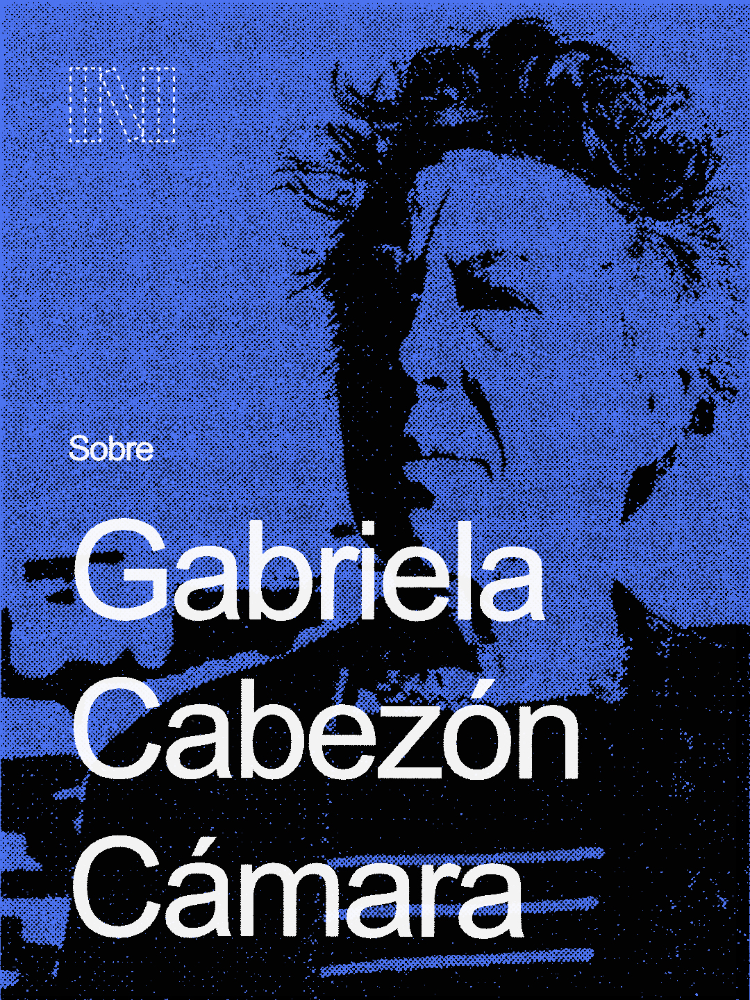
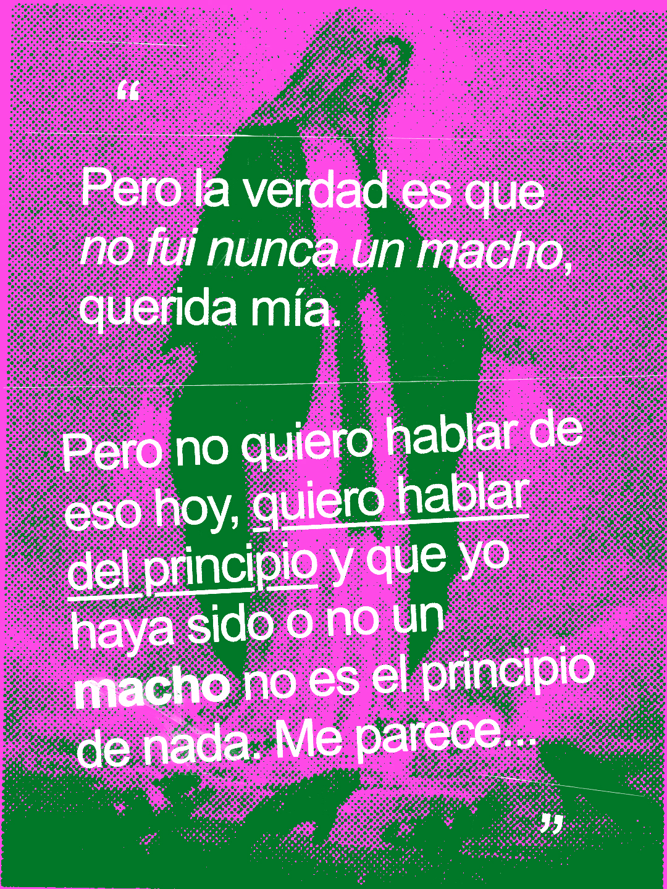
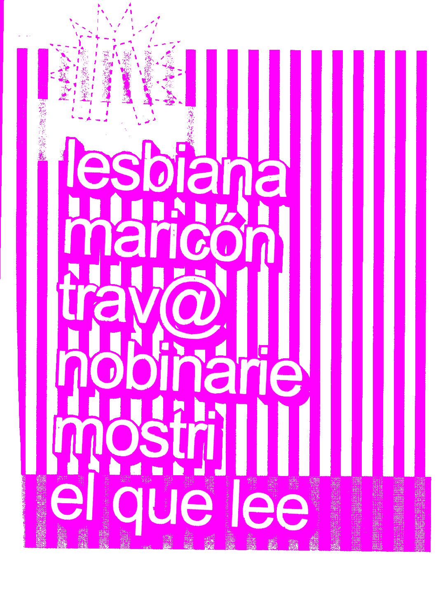
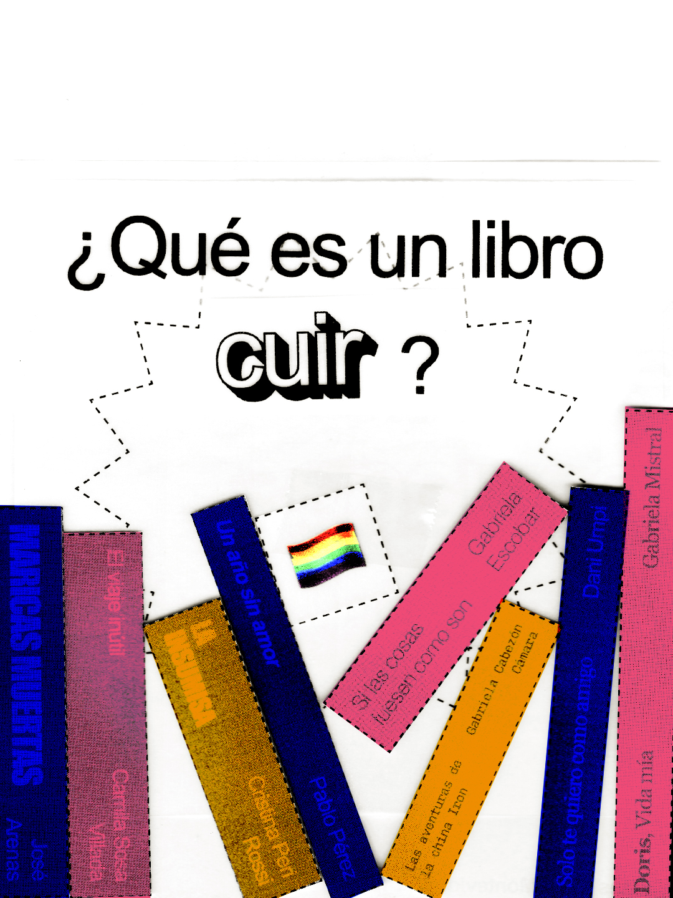
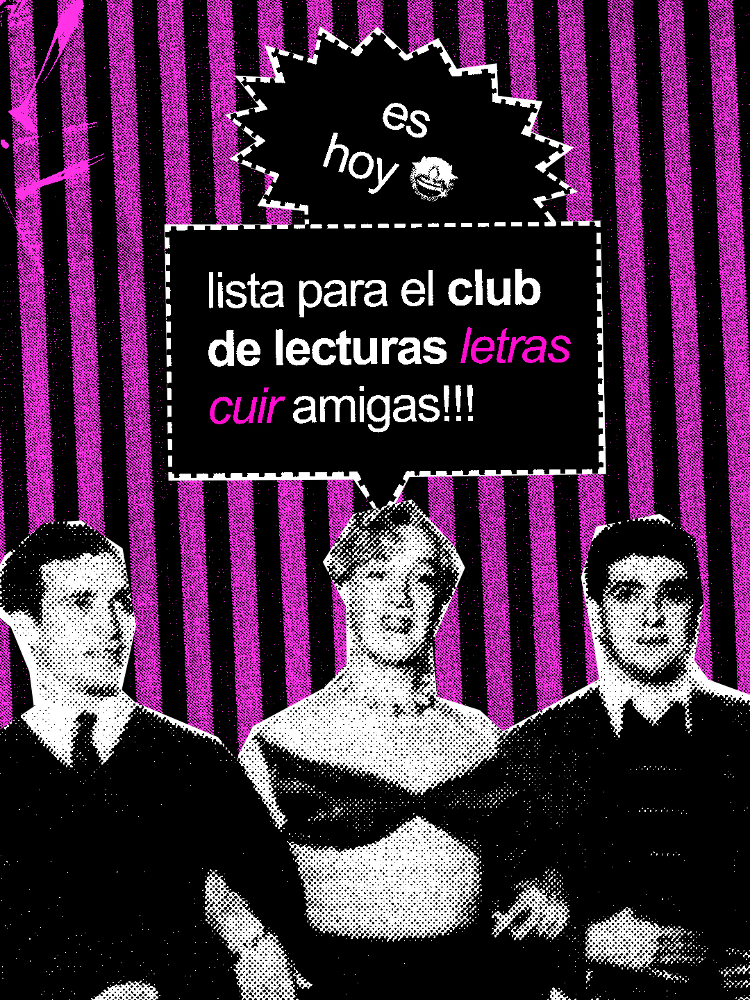
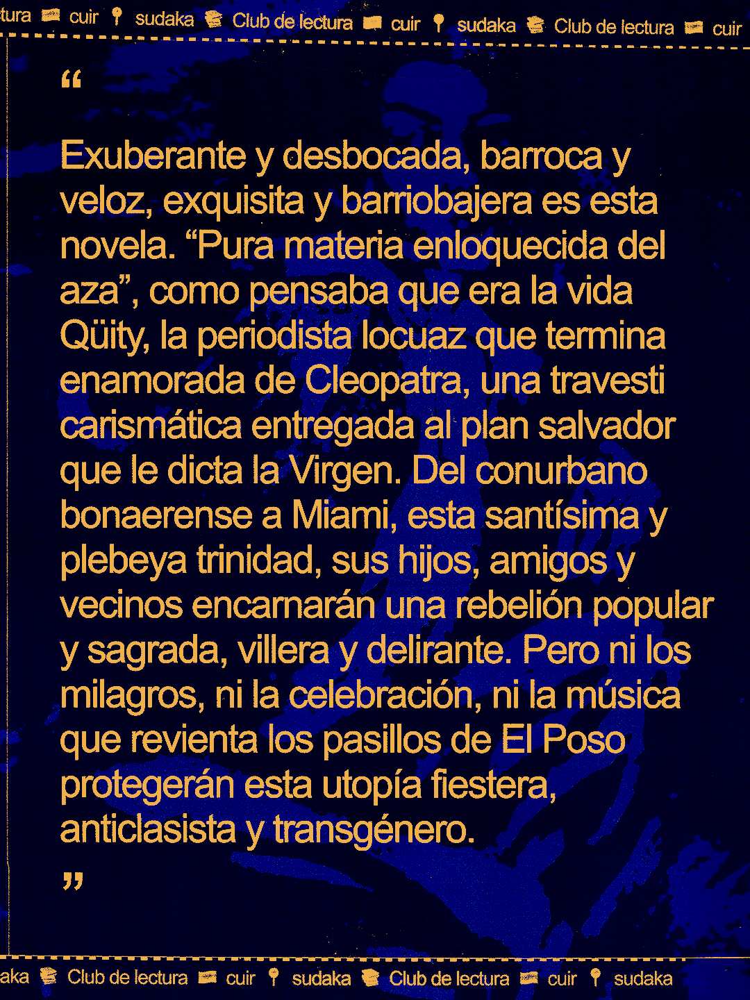

Books & fags
Planted: Mar 20, 2026. Last tended:
Been feeling there was a lack of a group or place in Montevideo, Uruguay, for queer people to gather around subjects of literature. Specially latinamerican literature, which I believe we need to be in touch with as that is the one telling the experiences which are closer, truer and more important for us. Funny enough saying this in english, I know. I permit myself the incoherence.
So, I took it upon myself to make this space exist, so Letras Cuir, Club de literatura LGBTQ+ y sudaka, was born. I consider myself a shy-ish and introvert person, so leading this group means also confronting that. An exercise in being the visible face of something.
Another joyfull thing about the project was creating the graphic world around it as I took this space as one to experiment visually and just have fun. Here you can see some of the graphic elements created for its instagram, posters, and more:





